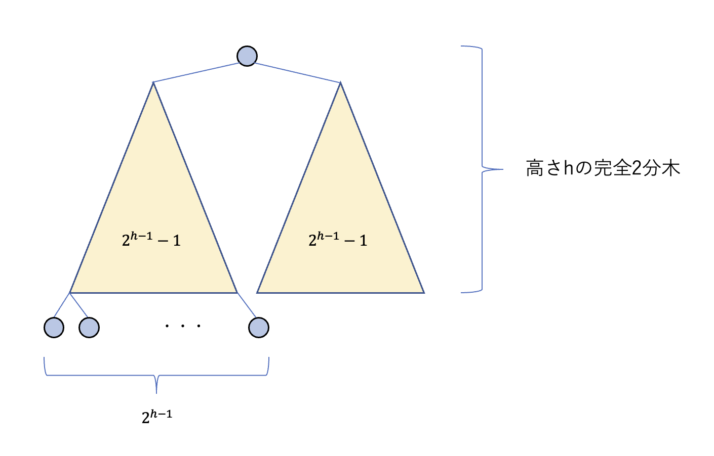

アルゴリズム系は苦手です(Heap編)
2025年6月19日
概要
アルゴリズム関連の勉強が必要になったので。まずはHeap編です。アルゴリズムって結構普及しているやつでも 僕には難解なものが多くて、こういうのを好きになれる人とは頭の出来が違うんじゃなかろうかと思ってしまうことが多いのですが。 勉強を対してせずにそういうことをぼやくのはダサいと思うのでとりあえず書き殴ることで勉強のモチベを保っていきたい。
とりあえず実装してみた
ヒープは授業だなんだで実装する機会はいくらでもあるんですが、空で書けるようにはなかなかなる気がしないんですよね。 ヒープに限った話ではないですが。 なのでとりあえずまたn回目の実装をしてみました。毎度毎度違うものを参照して書いていますが、今回は アルゴリズムイントロダクション第6章「優先度付きキュー」を参考にしています。
全部白文字で見にくくて申し訳ないです。C++よる実装です。
#include
#include
class Heap {
private:
std::vector heap;
int heapsize;
int parent(int index) {
return (index - 1) / 2;
}
int leftChild(int index) {
return 2 * index + 1;
}
int rightChild(int index) {
return 2 * index + 2;
}
public:
Heap(const std::vector& input) {
heap = input;
heapsize = heap.size();
}
void maxHeapify(int i) {
int l = leftChild(i);
int r = rightChild(i);
int largest = i;
if (l < heapsize && heap[l] > heap[largest]) {
largest = l;
}
if (r < heapsize && heap[r] > heap[largest]) {
largest = r;
}
if (largest != i) {
std::swap(heap[i], heap[largest]);
maxHeapify(largest);
}
}
void buildMaxHeap() {
heapsize = heap.size();
for (int i = heapsize / 2 - 1; i >= 0; --i) {
maxHeapify(i);
}
}
void HeapSort() {
buildMaxHeap();
int n = heap.size();
for (int i = n - 1; i >= 1; --i) {
std::swap(heap[0], heap[i]);
heapsize--;
maxHeapify(0);
}
}
int MaxHeapMaximum() const {
if (heap.size() > 0) {
return heap[0];
}
throw std::runtime_error("Heap is empty");
}
int MaxHeapExtractMax() {
int heapsize = heap.size();
int max = MaxHeapMaximum();
heap[0] = heap[heapsize - 1];
maxHeapify(0);
heapsize--;
heap.pop_back();
return max;
}
void MaxHeapIncreaseKey(int i, int key) {
if (key < heap[i]) {
throw std::runtime_error("New key is smaller than current key");
}
heap[i] = key;
while (i > 0 && heap[parent(i)] < heap[i]) {
std::swap(heap[i], heap[parent(i)]);
i = parent(i);
}
}
void MaxHeapInsert(int key, int n) {
if (heapsize >= n) {
throw std::runtime_error("Heap is full");
}
heap.push_back(INT_MIN);
MaxHeapIncreaseKey(heapsize - 1, key);
}
void printHeap() const {
for (int val : heap) {
std::cout << val << " ";
}
std::cout << std::endl;
}
const std::vector& getHeap() const {
return heap;
}
};
Heap概要
一般にヒープというと"binary heap"を指すということで多分問題ないと思うので、ここではheap sortの文脈もあるので binary heapのことを指すものとします。また、今回はC++による実装ですがCなど静的メモリ管理が必要な 言語では固定長配列によるヒープ管理が実装上必要だと思われるので、 一般的なヒープの説明では要素数の上限(ここではnとします)が設けられていて、それ以上では"Heap Overflow"と扱われます。 以下では、疑似コードでは1-indexedである場合も多々ありますが実装上混乱するのが好きじゃないので0-indexedによる説明をし、 Heap[0 : Heap.heapsize - 1]のように表記される場合, n-1番目まで数字が入っている可能性はあるが 0番目からheapsize-1番目までの要素がヒープ構造を保証しているという状態であるとします。
ここからはコードの中身を自然言語に書き下しつつ特徴などを説明したいです。 まずは親子関係に関する手続きが定義されています。親子のindexの関係をそのまま書いただけです。高速に計算するために、 コンピュータ内部ではこの手続きをビット演算により行うようになっていることが普通です。
構造的帰納法
木構造を扱うときに"構造的帰納法"という証明手法が使われることが多い気がするので。とは言ってもHeapでは大抵直感的に そらそうやろという問題ばっかり見る気がするのですが。以下でも、証明するまでもなくねえかという問題を一応解きます。
問題:
Heap[1, ..., n]がヒープの時、その中の任意の部分木が含む最大値はその部分木の根であることを示せ。
ヒープってそういうもんでしょという気持ちを抑えて証明します。
証明:
構造的帰納法を用いて証明します。帰納法の過程は命題の通り。
まずはベースケースとして、基底部=葉ノードを考えると、葉ノードを部分木として捉えた時には子を持たず、 部分木の要素は自分自身のみなので自明に最大値は自分自身=部分木の根ノードなので命題は成り立つ。
下から上に登っていくイメージで帰納的に考えます。
ノードrを根ノードとする部分木\( T_r \)について、
その左の子ノードを根とする部分木を\( T_l \)、(存在すれば)右の子ノードを根とする部分木を\( T_r \)とする。この時
\( T_l \)、\( T_r \)は帰納法の仮定を満たすので最大値はそれぞれの根ノード=rの子ノードである。
この時、Heap[1, ..., n]がヒープであることを用いるとrの値はその子ノード両方以上の値を持つことが保障されているので、
\( T_r \)の最大値はrの値である。よって、帰納ステップの証明ができた。
ヒープの作り方
ヒープ条件の維持の話です。まずは"Max Heapify"という手続きを考えます。
void maxHeapify(int i) {
int l = leftChild(i);
int r = rightChild(i);
int largest = i;
if (l < heapsize && heap[l] > heap[largest]) {
largest = l;
}
if (r < heapsize && heap[r] > heap[largest]) {
largest = r;
}
if (largest != i) {
std::swap(heap[i], heap[largest]);
maxHeapify(largest);
}
}
先ほどのコードの一部です。状況としては、基本的に完全なヒープ構造ができている配列があるんだけど、あるノードが自分より大きな子ノードを持ってしまっている、 というときに大きい方の子ノードとその親ノードを入れ替えるという仕組みの手続きです。入れ替えたことによって 下層の部分木がヒープ条件を満たさなくなってしまっているかもしれないのでその修正も再起的に行います。ヒープ条件を満たしている部分木の 根ノードのindexを渡しても何も起きません。
このMax Heapifyの手続きをボトムアップ的に呼び出すことでヒープが構築できます。(buildMaxHeap) その再帰的な呼び出しが \(n/2-1\)から0までのindexに対して行えばいいということはヒープの構造から比較的簡単に導けるでしょう。
MaxHeapify の計算量
MaxHeapifyの計算量を推定するために、まず以下の補題を設定します。
補題
節点数nのヒープの子となる部分木の接点数は高々\(2/3n\)個である。
補題の説明
証明というほど厳格なものではないですが、証明の気持ちは以下の形で問題ないと思います。
まず以上のように高さ\(h\)の完全二分木を考えると、一つの部分木が全体のヒープの木構造の中でなるべく大きい割合を占めてもらうには 一番下の層の(上から数えて\(h+1\)段目)にだけノードがひっついている状況を考えればいいとわかります。 それぞれの個数を考えてみると黄色い部分は高さ\(h-1\)の完全二分木となっているのでその節点数は\(2^{h-1}-1\)個となります。 そして左側にある部分木の最下層に引っ付けられるノードの最大数は\(2^{h-1}\)個となることがわかります。
この状況でそう節点数\(n\)を考えると、
となるので、でかい方の部分木の節点数は\(2^h - 1 = 2 \cdot 2^{h-1} - 1\)となることを考えると木がめちゃめちゃ深くなった時(\(h \to \infty\)) \(2/3n\)に収束することがわかります。
マスター定理の適用
よって再帰的な処理による接点数の減少は\(2/3\)で抑えられることがわかりました。与えられたノード\(i\)に対して親子関係の 構築(再帰と関係ない部分の処理)\(\Theta(1)\)との合計時間と考えれば、 この処理の計算量は以下のような漸化式により与えられることがわかります。
マスター定理は次を参照: Master Theoremとかいうかっこいい定理